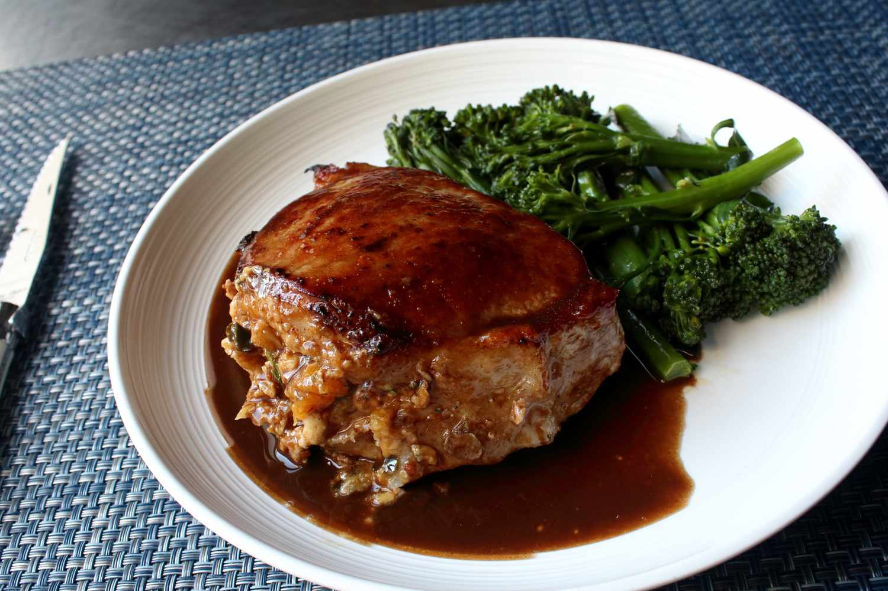

Chicken Noodle Salad

Lasagna
I'm gonna show you my favorite technique for stuffing pork chops, as well as one of my favorite stuffings for pork.
Above and beyond producing something that's visually impressive, we are also flavoring our pork chops from the inside out with this method.
So, this is basically a technique video and will work no matter what stuffing you decide to use--although this peach stuffing was
absolutely delicious.
Ingredients
For the Stuffing
- 2 slices bacon, sliced into 1/4-inch pieces
- ½ cup diced onion
- 2 tablespoons diced poblano pepper
- 1 large yellow peach - peeled, pitted, and diced
- 2 teaspoons fresh thyme leaves
- ¼ teaspoon freshly ground black pepper
- 1 tablespoon Sriracha chile sauce
- ¼ teaspoon kosher salt
- 1 pinch cayenne pepper
- 8 saltine crackers, crushed
- 2 tablespoons chicken broth, or as needed
For the pork chops
- 2 double-cut boneless pork chops
- salt to taste
- 1 tablespoon olive oil
- ¼ cup chicken broth (Optional)
- 2 tablespoons balsamic vinegar
- 2 tablespoons cold salted butter
Steps
- Preheat the oven to 400 degrees F (200 degrees C).
-
Cook bacon in a nonstick pan over medium heat until almost crisp, about 5 minutes.
Add onion and poblano pepper and saute until onion turns translucent, 5 to 6 minutes more.
Add peach and cook until tender and starting to give off some juice. Remove from heat and transfer to a bowl.
-
Stir thyme leaves, black pepper, salt, cayenne, and saltine crackers into the peach mixture.
Add 2 tablespoons chicken broth if needed for added moisture. Refrigerate until needed.
- Fill the pockets with the stuffing, packing and pressing in firmly. Season both sides of the chops with salt.
- Heat olive oil in an oven-safe pan over high heat.
Sear chops in the hot oil until browned on one side, about 3 minutes.
Carefully turn the chops over and transfer the pan to the center of the oven.